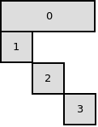

BlockDecomposition.jl is a package providing features to take advantage of the shape of block structured problem; in other words, problems on which Dantzig-Wolfe decomposition or Benders decomposition can be applied.
Note
This package provides: 1. a JuMP modeling layer for describing Benders decomposition 2. a JuMP modeling layer for describing Dantzig-Wolfe decomposition 3. an interface to write customized oracles for (Benders/Dantzig-Wolfe) subproblems
Only the first feature is supported by a solver for now (CPLEX 12.7)
Consider the following problem
\[\begin{array}{c c c c c c c c}
\text{min} & \sum_{\alpha=1}^h f'_\alpha y_\alpha & + & \sum_{\alpha=1}^i f_{1,\alpha} x_{1,\alpha} & + & \sum_{\alpha=1}^j f_{2,\alpha} x_{2,\alpha} & + & \sum_{\alpha=1}^k f_{3,\alpha} x_{3,\alpha} & \\
\text{c}_{1,1} & \sum_{\alpha=1}^h a_{1,1,\alpha} y_\alpha & + & \sum_{\alpha=1}^i b_{1,\alpha} x_{1,\alpha} & & & & & \geq \beta_{1,1} \\
\vdots & & & \vdots & & & & & \\
\text{c}_{1,n}: & \sum_{\alpha=1}^h a_{1,n,\alpha} y_\alpha & + & \sum_{\alpha=1}^i b_{n,\alpha} x_{1,\alpha} & & & & & \geq \beta_{1,n} \\
\text{c}_{2,1}: & \sum_{\alpha=1}^h a_{2,1,\alpha} y_\alpha & + & & & \sum_{\alpha=1}^j c_{1,\alpha} x_{2,\alpha} & & & \geq \beta_{2,1} \\
\vdots & & & & & \vdots & & & \\
\text{c}_{2,p}: & \sum_{\alpha=1}^h a_{2,p,\alpha} y_\alpha & + & & & \sum_{\alpha=1}^j c_{p,\alpha} x_{2,\alpha} & & & \geq \beta_{2,p} \\
\text{c}_{3,1}: & \sum_{\alpha=1}^h a_{3,1,\alpha} y_\alpha & + & & & & & \sum_{\alpha=1}^k d_{1,\alpha} x_{3,\alpha} & \geq \beta_{3,1} \\
\vdots & & & & & & & \vdots & \\
\text{c}_{3,q}: & \sum_{\alpha=1}^h a_{3,q,\alpha} y_\alpha & + & & & & & \sum_{\alpha=1}^k d_{q,\alpha} x_{3,\alpha} & \geq \beta_{3,q} \\
\end{array}\]
The coefficients matrix has the following block structure :

Hence, we can apply Benders decomposition on this problem.
We partition the variables.
Variables $y_\alpha$, $\alpha\in \{1 \ldots h\}$ are in the master.
Variables $x_{1,\alpha}$, $\alpha \in \{1 \ldots i\}$ are in the first subproblem.
Variables $x_{2,\alpha}$, $\alpha \in \{1 \ldots j\}$ are in the second subproblem.
Variables $x_{3,\alpha}$, $\alpha \in \{1 \ldots k\}$ are in the third subproblem.
Assume that $m$ is the compact formulation written with JuMP.
The user must create a function to describe this decomposition. Such function could be:
function b_decomp(var_name, var_id)
if var_name == :y
return (:B_MASTER, 0)
else
return (:B_SP, var_id[1])
end
end
add_Benders_decomposition(m, b_decomp)
Consider the following problem :
\[\begin{array}{c c c c c c c}
\text{minimize} & \sum_{\alpha=1}^i f_\alpha x_\alpha & + & \sum_{\alpha=1}^j f_{i+\alpha} x_{i+\alpha} & + & \sum_{\alpha=1}^k f_{i+j+\alpha} x_{i+j+\alpha} & & \\
\text{mc}_{1}: & \sum_{\alpha=1}^i a_{1,\alpha} x_\alpha & + & \sum_{\alpha=1}^j a^{1}_{i+\alpha} x_{i+\alpha} & + & \sum_{\alpha=1}^k a_{1,i+j+\alpha} x_{i+j+\alpha} & \geq & \beta_{0,1} \\
\vdots & \vdots & & \vdots & & \vdots & & \\
\text{mc}_{m}: & \sum_{\alpha=1}^i a_{m,\alpha} x_\alpha & + & \sum_{\alpha=1}^j a^{m}_{i+\alpha} x_{i+\alpha} & + & \sum_{\alpha=1}^k a_{m,i+j+\alpha} x_{i+j+\alpha} & \geq & \beta_{0,m} \\
\text{sc}_{1,1}: & \sum_{\alpha=1}^i b_{1,\alpha} x_\alpha & & & & & \geq & \beta_{1,1} \\
\vdots & \vdots & & & & & & \\
\text{sc}_{1,n}: & \sum_{\alpha=1}^i b_{n,\alpha} x_\alpha & & & & & \geq & \beta_{1,n} \\
\text{sc}_{2,1}: & & & \sum_{\alpha=1}^j c_{1,i+\alpha} x_{i+\alpha} & & & \geq & \beta_{2,1} \\
\vdots & & & \vdots & & & & \\
\text{sc}_{2,p}: & & & \sum_{\alpha=1}^j c_{p,i+\alpha} x_{i+\alpha} & & & \geq & \beta_{2,p} \\
\text{sc}_{3,1}: & & & & & \sum_{\alpha=1}^k d_{1,i+j+\alpha} x_{i+j+\alpha} & \geq & \beta_{3,1} \\
\vdots & & & & & \vdots & & \\
\text{sc}_{3,q}: & & & & & \sum_{\alpha=1}^k d_{q,i+j+\alpha} x_{i+j+\alpha} & \geq & \beta_{3,q} \\
\end{array}\]
The coefficients matrix has the following block structure :

Hence, we can apply Dantzig-Wolfe decomposition on this problem.
We partition the constraints.
Constraints $\text{mc}_1$ to $\text{mc}_m$ are in the master.
Constraints $\text{sc}_{1,1}$ to $\text{sc}_{1,n}$ are in the first subproblem.
Constraints $\text{sc}_{2,1}$ to $\text{sc}_{2,p}$ are in the second subproblem.
Constraints $\text{sc}_{3,1}$ to $\text{sc}_{3,q}$ are in the third subproblem.
As for Benders decomposition, the user must to create function to describe this decomposition. Such function could be: ::
function dw_decomp(constr_name, constr_id)
if constr_name == :mc
return (:DW_MASTER, 0)
else
return (:DW_SP, constr_id[1])
end
end
add_Dantzig_Wolfe_decomposition(m, dw_decomp)